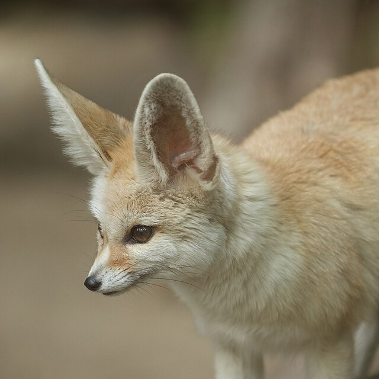

Thinking Outside The Fox
Fennec Fox
Fennec foxes are a mix of tan a brown colors with orangish more saturated brown on top and a lighter more white color on the bottom. They are usually about 12-14 inches long and 8 inches tall. This breed is native to and primarily found in North Africa. Their large ears help them survive the desert heat by storing extra blood vessels to retain water.
These are the most common and popular type of pet fox. They are a nice small size that suits most people, but this does require the owners extra awareness in keeping track of where they are. They also have a long life expectancy. They are very friendly towards humans but can be a bit of a problem with other pets or children as they can bite a bit similar to a cat. They are also known for being quite loud so this should be taken note of.